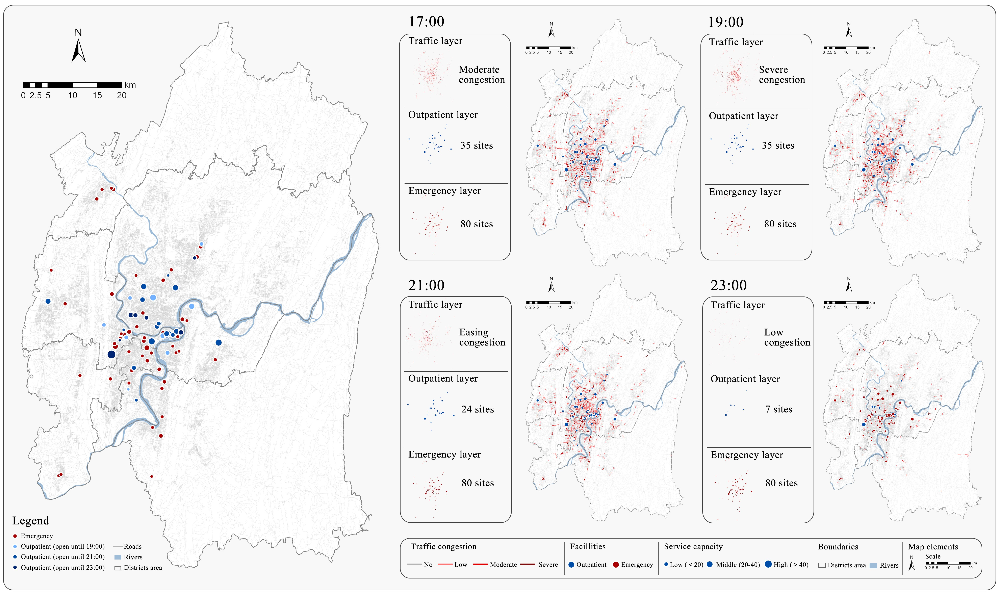
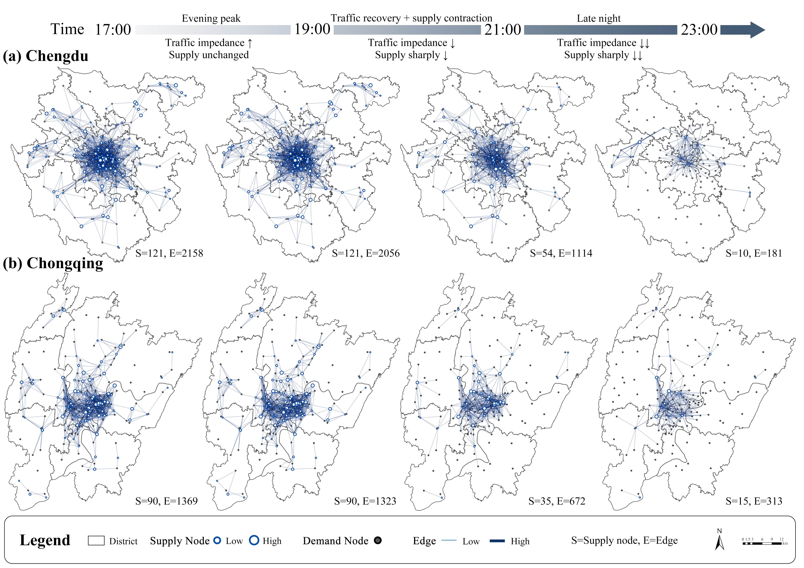
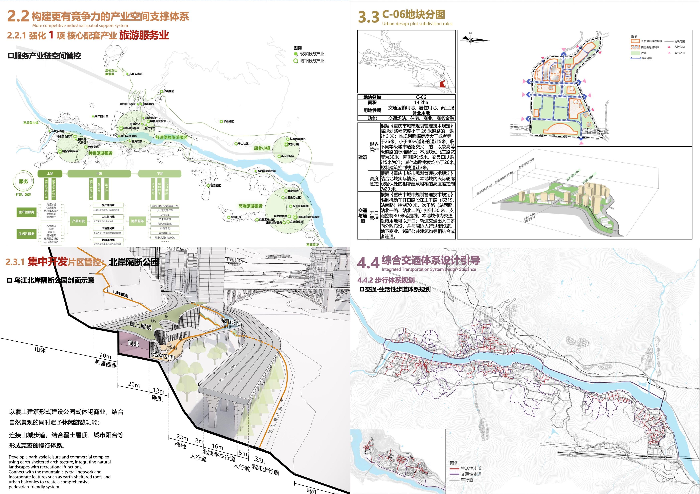
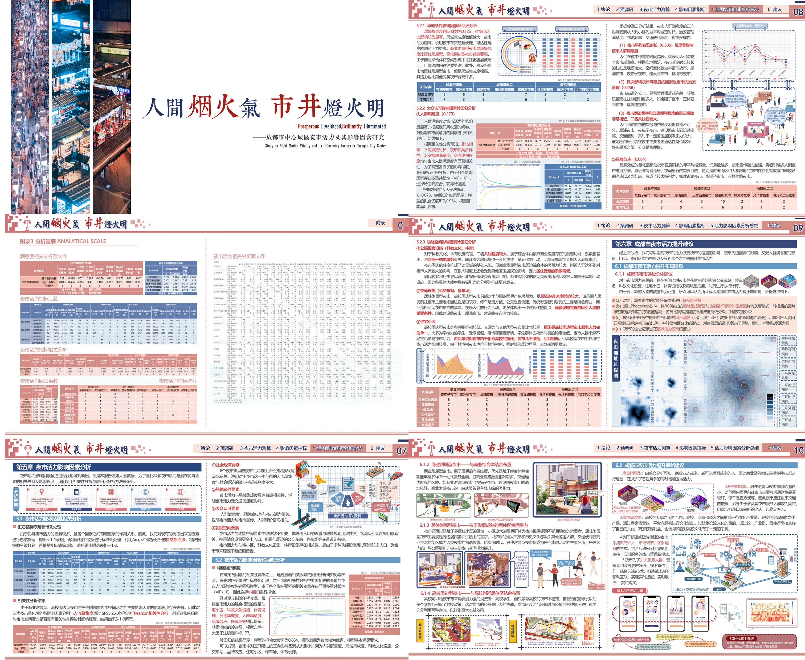
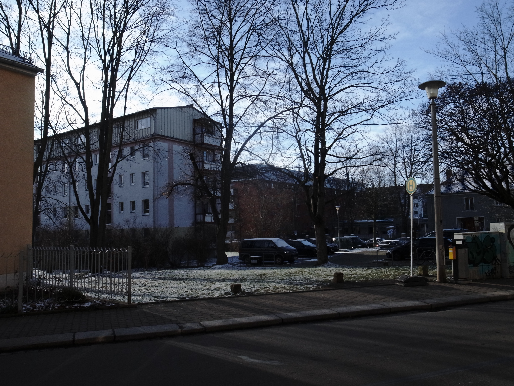
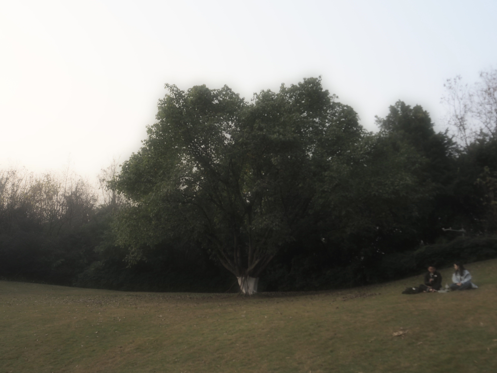
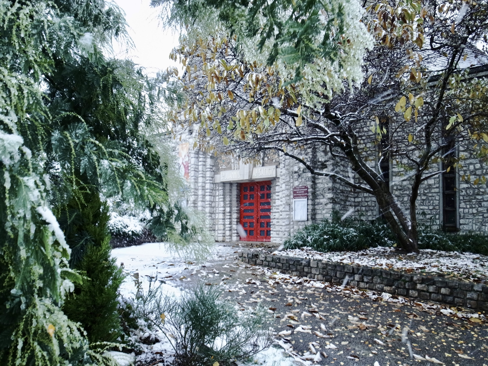
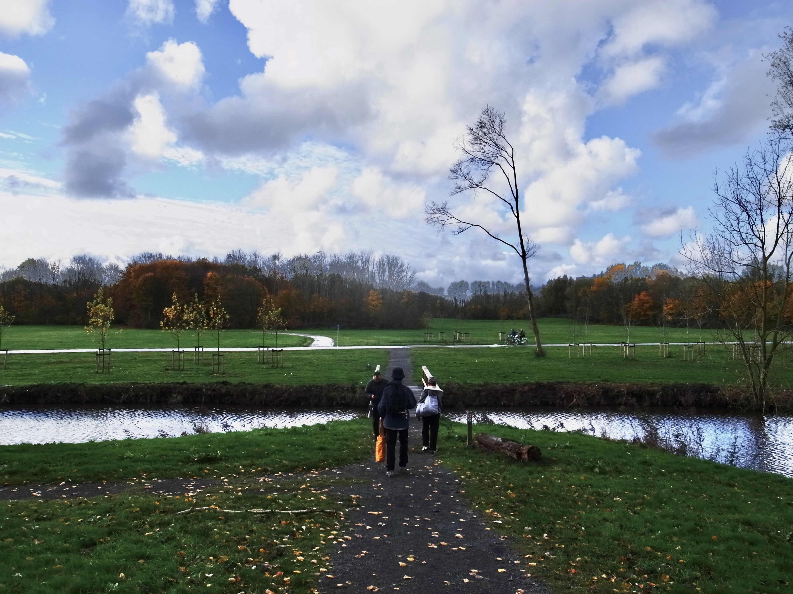

GPA 3.7 / 4.0
Coursework Spatial Planning Techniques, Urban Governance, Regional Development, Planning Theory
Admission Admitted as the top-ranked applicant in the academic master’s track.

I am based in Chongqing, China. My academic path has taken me through Chengdu, Chongqing, and Paris, with training in urban planning and a growing interest in urban networks, accessibility, public service systems, healthcare geography, and resilience. Beyond research, I am interested in photography, travel, and the lived experience of places.
GPA 3.7 / 4.0
Coursework Spatial Planning Techniques, Urban Governance, Regional Development, Planning Theory
Admission Admitted as the top-ranked applicant in the academic master’s track.
Semester exchange at ESTP Paris from September 2024 to January 2025.
GPA 3.5 / 4.0
Core courses Top scores in Urban Sociology, Planning History, Infrastructure Planning, and Urban Economics.
Recognition Graduated as Excellent Graduate and received multiple awards for academic scholarship and leadership.


Before the nighttime network analysis, I examined the long-term spatial alignment of tertiary Grade-A healthcare resources with urban expansion and population redistribution across Chengdu, Chongqing, Kunming, and Guiyang. This four-city spatial analysis provided an empirical foundation for my later work on time-specific healthcare service networks.
My M.S. thesis developed time-specific healthcare supply–demand and inter-facility coordination networks covering 318 healthcare facilities, including 85 nighttime service providers, and 161 subdistrict-level demand units across four nighttime periods in Chongqing. I then compared the connectivity and spatial organization of nighttime outpatient service networks in plain Chengdu and mountainous Chongqing.
Complex network modeling · OD/service networks · spatiotemporal analysis · accessibility analysis · network optimization
Research design · data integration · modeling workflow · quantitative analysis · visualization

Examined case evidence from Southwest China to investigate how landslides, debris flows, and floods can trigger cascading disruptions in lifeline systems and the built environment.
Summarized response strategies for disaster prevention and mitigation in mountainous settings.

Conducted field surveys, GIS-based suitability analysis, and stakeholder consultation for district-level urban design and planning guidelines, incorporating feedback from more than ten stakeholder meetings.
Contributed optimization strategies and visualized design outcomes for low-altitude-economy adaptive planning; the work was adopted by the local government as a statutory plan.

Constructed a 20-indicator framework across four dimensions to examine the spatial determinants of night-market vitality and distribution in Chengdu.
Applied space syntax and regression analysis to identify spatial relationships and develop planning recommendations; the project received the Excellence Prize at the 2022 WUPENicity.
Niu, H., & Huang, Y. (2026). Keeping Pace with Urban Growth? Long-Term Spatial Alignment of Tertiary Grade-A Healthcare Resources in Four Southwestern Chinese Cities. Land, 15(10), 1984. https://doi.org/10.3390/land15101984 ↗
Niu, H., & Huang, Y. Spatiotemporal Evolution and Planning Response of Urban Nighttime Healthcare Service Networks: A Case Study of the Central Urban Area of Chongqing. Sustainable Cities and Society.
Niu, H., & Huang, Y. Network Connectivity and Spatial Organization of Nighttime Outpatient Services: Evidence from Plain Chengdu and Mountainous Chongqing.
2026 AAG Annual Meeting
Niu, H. Spatial Patterns of Nighttime Healthcare Accessibility in a Mountainous City: A Network-Based Analysis of Chongqing.
2025 ACSP Annual Conference
Niu, H., & Zhang, P. Regenerating Aging Communities via Intergenerational Symbiosis: The Case of Yulin, Chengdu.
2025 ISOCARP World Planning Congress
Zhang, Z., Niu, H., & Zhang, P. Real-time Assessment of Night Market Vitality: a Multi-modal Graph Neural Network Approach.
2025 SPSD International Conference
Niu, H., & Zhang, Z. Spatial Polarization and Governance Strategies for County-Level Digital Villages: An Empirical Study from Four Provinces in Northern China.
2025 The Annual National Planning of China
Niu, H. Incentive-Compatible Strategies for Revitalizing Hollow Villages: Learning from Italy’s One-Euro Housing Policy. DOI: 10.26914/c.cnkihy.2025.046186
2025 The Annual National Planning of China
Niu, H. Translating Traditional Planning Principles in Modern Context: A Comparative Study of Beijing’s Central Axis and Paris. DOI: 10.26914/c.cnkihy.2025.045654
2025 The Annual National Planning of China
Niu, H., Zhang, P., & Zhang, Z. Spatial Patterns and Determinants of Housing Prices in Beijing: A Kriging-Based Approach. DOI: 10.26914/c.cnkihy.2025.046371
2024 The Annual National Planning of China
Zhang, P., Zhang, Z., Niu, H., Xiang, M., & Pan, Y. Quantitative Evaluation of Urban Night Market Vitality Based on Spatial Data: A Case Study of Central Chengdu. DOI: 10.26914/c.cnkihy.2024.035295
Beyond research, I am interested in how places are seen, experienced, and remembered through images and travel.





